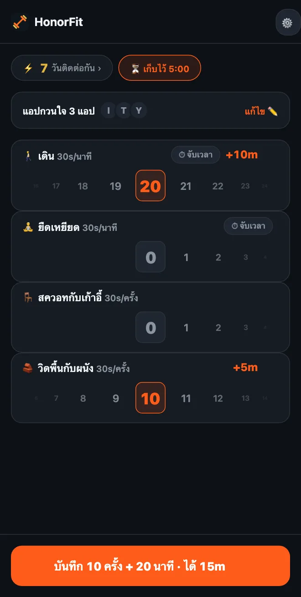

วิดพื้นไม่ไหว? ท่าออกกำลังกายเบาๆ เพื่อปลดล็อกแอป
สวัสดีครับทุกคน! คนส่วนใหญ่รู้จัก HonorFit ในฐานะแอปบล็อกแอปแบบวิดพื้น: แอปของคุณจะล็อกไว้จนกว่าจะออกกำลังกายแล้วกดบันทึกเอง แต่ถ้าข้อมือ ไหล่ หรือเข่าของคุณไม่ค่อยปลื้ม หรือคุณนั่งทำงานทั้งวัน หรือช่วงนี้วิดพื้นไม่ไหวจริงๆ ก็ไม่เป็นไรเลยครับ
สำหรับผม จุดประสงค์ไม่เคยอยู่ที่การวิดพื้นจริงๆ จุดประสงค์คือการมีลูกระนาดเล็กๆ ขวางระหว่างคุณกับการไถฟีด ซึ่งบังเอิญดีต่อสุขภาพด้วย การเดินรอบหมู่บ้านสักรอบก็ทำหน้าที่นั้นได้ดีพอกัน นี่คือวิธีตั้งค่า HonorFit ให้เข้ากับท่าที่คุณทำได้จริง
ถ้าใช้เวอร์ชันฟรี
เวอร์ชันฟรีมีท่าในตัวสี่ท่า: วิดพื้น ซิทอัพ ดึงข้อ และสควอท ในบรรดานี้ สควอท เบาที่สุด และได้ครั้งละ 30 วินาที
และเพราะเป็นระบบความซื่อสัตย์ ไม่มีใครมาตรวจว่าสควอทของคุณหน้าตาเป็นยังไง ถ้าสควอทเต็มท่าหนักไป ลุกจากเก้าอี้แล้วนั่งลงก็นับได้ วิดพื้นก็เหมือนกัน ดันกับผนังหรือขอบเคาน์เตอร์ครัวแทนก็ได้ คุณเป็นคนกำหนดว่าหนึ่งครั้งคืออะไร แค่บันทึกตามจริงก็พอ
ถ้ามี Pro: เลือกท่าเอง
Pro ($3 ต่อเดือน หรือ $19.99 จ่ายครั้งเดียวในสหรัฐฯ ราคาต่างกันไปตามประเทศและสกุลเงิน สโตร์จะแสดงราคาในประเทศของคุณ) ให้คุณเพิ่ม เปลี่ยนชื่อ และลบท่า แล้วตั้งว่าแต่ละท่าได้เวลาเท่าไหร่ เข้าได้จากรูปเฟืองที่หน้าหลัก แล้วแตะการ์ด ท่าออกกำลังกาย ผมเขียนทุกขั้นตอนของหน้าแก้ไขท่าไว้ที่นี่ ส่วนนี่คือท่าแบบที่ผมจะลองดู
ออกกำลังกายแบบจับเวลา (บันทึกเป็นนาที)
สลับท่าไหนก็ได้เป็น นาที หรือแตะท่าแนะนำที่มี ⏱ ท่าที่เหมาะกับกรณีนี้:
- 🚶 เดิน อันนี้ผมชอบที่สุด น่าจะเป็นชัยชนะที่ง่ายที่สุดแล้ว
- 🧘 โยคะ หรือเปลี่ยนชื่อเป็น ยืดเหยียด ถ้าตรงกับสิ่งที่คุณทำมากกว่า
- 🏊 ว่ายน้ำ และ 🚴 ปั่นจักรยาน ทั้งคู่ถนอมข้อต่อ
- 🪷 นั่งสมาธิ ไม่ใช่การออกกำลังกาย แต่มีอยู่ในรายการ และสิบนาทีที่สงบแลกกับ TikTok สิบนาทีก็ถือว่าคุ้มอยู่นะ
การออกกำลังกายแบบจับเวลาเริ่มที่ 30 วินาทีต่อนาที เดิน 20 นาทีก็ได้ 10 นาที วงล้อนับเป็นนาทีเต็ม สูงสุดครั้งละ 100 นาที
ท่าที่ทำได้ที่โต๊ะทำงาน (บันทึกเป็นครั้ง)
แตะ ＋ เพิ่มท่า แล้วพิมพ์ชื่อ ท่าที่ทำได้ในออฟฟิศหรือคอนโดเล็กๆ โดยไม่ต้องใช้อุปกรณ์:
- สควอทกับเก้าอี้ (ลุก-นั่ง): ลุกขึ้นจากเก้าอี้ แล้วนั่งลง
- วิดพื้นกับผนัง หรือ วิดพื้นกับโต๊ะ: วิดพื้นโดยดันกับผนังหรือโต๊ะที่แข็งแรง ยิ่งพื้นผิวสูงยิ่งง่าย
- เขย่งปลายเท้า: เขย่งขึ้น แล้วลง ทำได้ระหว่างรอไมโครเวฟ
- ย่ำเท้าอยู่กับที่: ก็คือท่าแนะนำ ยกเข่าสูง แค่ทำช้าลง จะเปลี่ยนชื่อก็ได้
- ท่าสะพานสะโพก และ ขมิบคีเกล: เงียบ ไม่ต้องใช้อุปกรณ์ และขมิบระหว่างประชุมได้โดยไม่มีใครรู้ ผมเขียนบทความเรื่องนี้ไว้ทั้งบทเลย
ท่าค้าง (แพลงก์ นั่งพิงกำแพง)
เพราะวงล้อแบบนาทีนับเป็นนาทีเต็ม แพลงก์ 20 วินาทีเลยไม่ค่อยเข้ากับตรงนั้น ผมจะตั้งท่าค้างเป็น ครั้ง แล้วกำหนดเองว่าหนึ่งครั้งคืออะไร เช่น “ค้าง 20 วินาทีนับเป็นหนึ่งครั้ง” แพลงก์และนั่งพิงกำแพงมีอยู่ในท่าแนะนำทั้งคู่
แต่ละท่าควรได้เท่าไหร่?
ท่าใหม่เริ่มที่ 30 วินาทีต่อครั้ง ปรับขึ้นลงได้ทีละ 5 วินาที จุดเริ่มต้นที่ผมแนะนำ:
| ท่า | นับเป็น | ได้ | ตัวอย่าง |
|---|---|---|---|
| 🚶 เดิน | นาที | 30 วินาทีต่อนาที | เดิน 20 นาที = 10 นาที |
| 🧘 ยืดเหยียด | นาที | 30 วินาทีต่อนาที | 10 นาที = 5 นาที |
| 🪑 สควอทกับเก้าอี้ | ครั้ง | 30 วินาทีต่อครั้ง | 10 ครั้ง = 5 นาที |
| 🧱 วิดพื้นกับผนัง | ครั้ง | 30 วินาทีต่อครั้ง | 10 ครั้ง = 5 นาที |
| เขย่งปลายเท้า | ครั้ง | 10–15 วินาทีต่อครั้ง | 20 ครั้ง ครั้งละ 15 วินาที = 5 นาที |
| แพลงก์ | ครั้ง (1 ครั้ง = ค้าง 20 วินาที) | 1 นาทีต่อครั้ง | ค้าง 3 รอบ = 3 นาที |
ทั้งหมดนี้เป็นแค่การเดาของผมว่าแบบไหนแฟร์ ตัวเลขที่ถูกต้องคือตัวเลขที่คุณยอมจ่ายจริงแทนที่จะโกง ถ้าการเดินคือนิสัยที่คุณอยากสร้างที่สุด ก็ให้ค่ามันสูงขึ้น เช่น นาทีละ 1 นาที

ชุดตั้งค่าที่หยิบไปใช้ได้เลย
- วันนั่งโต๊ะ: สควอทกับเก้าอี้, วิดพื้นกับผนัง, เขย่งปลายเท้า, เดิน
- เบาๆ: เดิน, ยืดเหยียด, สควอทกับเก้าอี้, วิดพื้นกับผนัง (ตามภาพด้านบน)
- สายชิล: เดิน, โยคะ, นั่งสมาธิ
- คอนโดเงียบๆ: ท่าสะพานสะโพก, ขมิบคีเกล, สควอทกับเก้าอี้, เดิน
ผมแนะนำให้มีไว้สามถึงสี่ท่า เพราะแต่ละท่ามีวงล้อของตัวเองที่หน้าหลัก
และถ้าคุณมีอาการบาดเจ็บ ปวด หรือมีปัญหาสุขภาพ ปรึกษาแพทย์หรือนักกายภาพบำบัดว่าท่าไหนโอเคสำหรับคุณนะครับ ผมทำแอปบล็อกแอป ไม่ใช่คนที่ควรถามเรื่องเข่าของคุณ 555
HonorFit Blocker คือแอปบล็อกแอปที่ใช้ฟรีทั้ง iPhone และ Android ใช้ระบบความซื่อสัตย์ ไม่ใช้กล้อง ไม่มีข้อมูลออกจากมือถือคุณ ท่าแบบกำหนดเองและการออกกำลังกายแบบจับเวลามาพร้อม Pro มันไม่ได้เหมาะกับทุกคน แต่หวังว่าหลายคนจะชอบนะครับ!